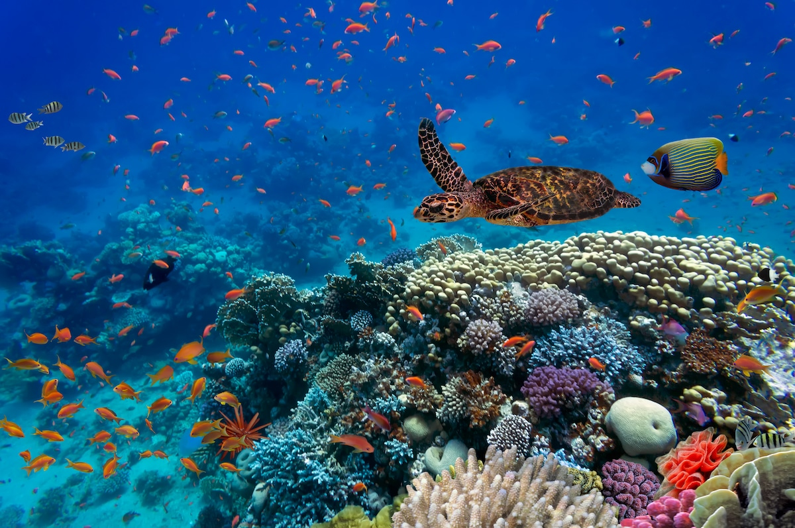

🌊 Coral Reef Health: Beneath the Surface
🪸 The Rainforests of the Ocean
Coral reefs are biodiversity hotspots, housing over 25% of all marine life. From tiny clownfish to majestic sea turtles, thousands of species depend on coral ecosystems for survival.
Yet climate change, ocean acidification, and pollution are pushing reefs to the brink. Mass bleaching events have destroyed nearly half of the world’s shallow-water corals.
“Protecting coral is about protecting the oceans—and everything connected to them.”
🔬 How Reefs Are Monitored
Scientists now use underwater drones, satellite data, and reef sensors to track reef health in real time. These tools measure water temperature, algae overgrowth, and coral color—indicators of stress or recovery.

📸 A diver uses AI-enhanced goggles to survey bleached reefs in Indonesia
💡 Smart Restoration Techniques
Coral gardening and 3D-printed reefs are changing the game. Fragments from healthy coral are grown in nurseries and replanted. Some are even designed to be more resilient to warmer waters.
🌐 Global Coral Crisis in Numbers (2025)
| Region | Reef Coverage Loss | Main Threat |
|---|---|---|
| Great Barrier Reef | 50% | Bleaching due to heatwaves |
| Caribbean Sea | 60% | Pollution & tourism |
| Indian Ocean | 40% | Ocean acidification |
🏝️ Community-Led Coral Protection
In coastal communities, fishers and divers are becoming conservationists. Armed with mobile apps and reef health kits, they track changes and alert marine authorities to threats in real time.
By blending traditional knowledge with marine science, a new wave of citizen guardians is rising.